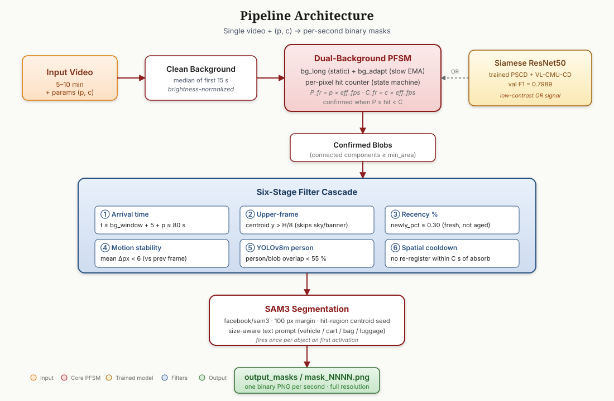

Vehant Research Labs · PSCDL 2026 Challenge
A real-time pipeline that flags long-duration encroachments — abandoned objects, parked vehicles, debris — in fixed-camera video, emitting one binary mask per second.
An object is flagged only after it has been continuously present for p seconds,
and is dropped once c seconds have passed since it appeared — so each object is
masked only inside the window [t₀+p, t₀+c]. We combine a dual-background
pixel finite-state machine with a trained Siamese network, a YOLOv8 person filter, a
CLIP semantic gate that rejects static infrastructure, and SAM3 for tight mask
boundaries. Generic in (p, c), real-time on a single GPU.
The binary per-second mask (left) is white only inside the persistence window [t₀+p, t₀+c] and black once the object is absorbed into the background. — scroll →

— scroll →
Static median + slow adaptive background; a pixel counts as changed only when it differs from both, so lighting drift is absorbed but real objects persist.
Trained on VL-CMU-CD + PSCD (val F1 = 0.80); a learned signal for low-contrast objects that frame-diff misses.
Arrival-time, recency, motion-stability, YOLOv8 person, and spatial-cooldown filters — each removes a distinct false-positive mode.
Each candidate blob is classified as encroachment object vs fixed infrastructure (pole / signboard / banner) and infrastructure is rejected — scene-agnostic, so it generalizes.
Meta facebook/sam3 with a size-aware prompt and the hit-region centroid as the seed, for tight object-shaped masks.
Both parameters flow through the whole pipeline — no hard-coded constants, so blind evaluation can change them freely.
| Video | F1 | Precision | Recall |
|---|---|---|---|
| video_1 | 0.870 | 0.894 | 0.866 |
| video_2 | 0.667 | 0.886 | 0.780 |
| video_3 | 0.965 | 0.955 | 0.994 |
| video_4 | 0.911 | 1.000 | 0.911 |
| video_5 | 0.819 | 0.980 | 0.828 |
| OVERALL | 0.846 | 0.943 | 0.876 |
Detections lock onto each object within 1–2 s of ground truth, with high precision — the two properties the F1 metric rewards most.
Five longer videos scored internally by the organizers. With the CLIP semantic gate, flagged (non-blank) seconds drop sharply versus the unhardened pipeline — fewer false positives, every true positive kept.
| Video | Resolution | Duration | Non-blank masks |
|---|---|---|---|
| test_1 | 1920×1080 | 450 s | 123 / 450 |
| test_2 | 1920×1080 | 421 s | 31 / 421 |
| test_3 | 1920×1080 | 481 s | 30 / 481 |
| test_4 | 1920×1080 | 301 s | 30 / 301 |
| test_5 | 2560×1440 | 391 s | 60 / 391 |
from submit import generate_mask generate_mask(p=60, c=90, video_path="video.mp4") # → output_masks/mask_0001.png, mask_0002.png, …